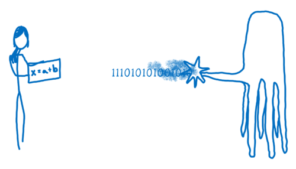
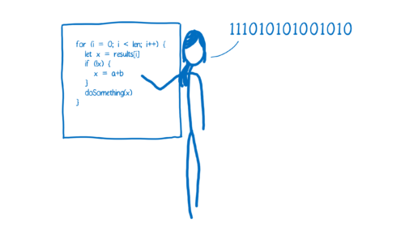
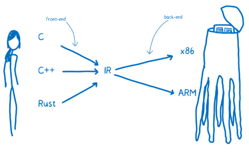
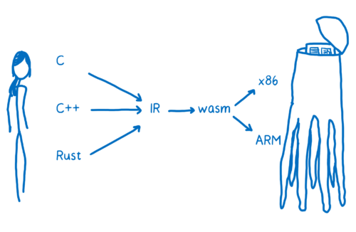

使用 Rust 编写 WebAssembly
- Rust WebAssembly FrontEnd
✨✨✨You can Edit this Article on Github site老规矩，列出本机器环境
system_profiler SPSoftwareDataType: macOS 10.14.3 (18D42) Darwin 18.2.0cargo --versioncargo 1.38.0-nightly (e3563dbdc 2019-07-16)rustc --versionrustc 1.38.0-nightly (311376d30 2019-07-18)wasm-pack -Vwasm-pack 0.8.1clang --versionx86_64-apple-darwin18.2.0 posixLVVMApple LLVM version 10.0.0 (clang-1000.10.44.4)
JavaScript 历史
JavaScript 于 1995 年问世，它的设计初衷并不是为了执行起来快，在前 10 个年头，它的执行速度也确实不快。被人们广为传播的“性能大战”在 2008 年打响。许多浏览器引入了 Just-in-time 编译器，也叫 JIT。JavaScript 代码的运行渐渐变快
随着性能的提升，JavaScript 可以应用于后端开发的 Node.js。性能的提升使得 JavaScript 的应用范围得到很大的扩展。

现在通过 WebAssembly，JavaScript 的性能可以再次提速。

JIT
计算机使用的是机器语言，也就是 010101 二进制，而我们编写的 JavaScript 代码是基于人类的认知而设计出来的高级编程语言，所以需要引擎把把人类的语言转换成机器能看懂的语言。
这就像电影《降临》中，人类和外星人的互相交流一样

在代码的世界中，通常有两种方式来翻译机器语言：解释器和编译器。
- 如果是通过解释器，翻译是一行行地边解释边执行
- 编译器是把源代码整个编译成目标代码，执行时不再需要编译器，直接在支持目标代码的平台上运行。
这两种翻译的方式都各有利弊。

解释器启动和执行的更快。你不需要等待整个编译过程完成就可以运行你的代码。从第一行开始翻译，就可以依次继续执行了，这样可以很快速的执行代码并看到结果。
可是当你运行同样的代码一次以上的时候，解释器的弊处就显现出来了。比如你执行一个循环，那解释器就不得不一次又一次的进行翻译，这样效率十分低下。
编译器的问题则恰好相反。它需要花一些时间对整个源代码进行编译，然后生成目标文件才能在机器上执行。对于有循环的代码执行的很快，因为它不需要重复的去翻译每一次循环。
而 Just-in-time 编译器：综合了两者的优点，首先可以以解释器的形式去翻译，接着 JIT 监视代码的运行状态，把 hot 代码（重复执行多次的代码）进行优化，生成一个更快速和高效的代码版本出来，并且存储之。
但是为了使执行速度变快，JIT 会增加很多多余的开销，远不如 AOT（Ahead-of-Time ）方式性能好。
而且对于 JavaScript 这种动态数据类型的语言来说，要实现一个完美的 JIT 非常难。因为 JavaScript 中的很多东西都是在运行的时候才能确定的。
LLVM
编译器如何生成汇编的过程可以简单说为：编译器的前端把高级语言翻译到 IR（Intermediate Representation，中间端表达式），编译器的后端把 IR 翻译成目标机器的汇编代码。这里我们着重介绍 LLVM
LLVM包含一系列模块化的编译器组件和工具链，用来开发编译器前端和后端。最初被用来取代现有于 GCC 堆栈的程式码产生器，LLVM 目前支援了很多种语言。
提供了完整编译系统的中间层，它会将中间语言 IR 从编译器取出与最佳化，最佳化后的 IR 接着被转换及链结到目标平台的汇编语言。LLVM 可以接受来自 GCC 工具链所编译的 IR，包含它底下现存的编译器。
在 LLVM 的编译当中，存在三个阶段，图片来自 asoa book：

frontend：解析原始语言并吐出 LLVM 中间表示（IR）代码optimiser：LLVM 的核心是中间端表达式 IR，一种类似汇编的底层语言。IR 是一种强类型的精简指令集（Reduced Instruction Set Computing，RISC），并对目标指令集进行了抽象。backend：采用 IR 并生成针对特定 CPU 优化的机器代码。
我们可以通过 brew install llvm 在 mac 上安装 LVVM，然后通过一个最简单的代码来理解其中的过程，一个命名为 sample.c 的文件：
#include <stdio.h>
int main()
{
return 0;
}
frontend 阶段：通过命令 clang -emit-llvm -S sample.c 转换为 LVVM IR，得到以下代码，注意后面的注释是我根据理解添加：
define i32 @main() #0 { // 定义一个命名为 main 并且返回 32 bit 整型的函数
%1 = alloca i32, align 4 // 在栈上分配 32 位的整型，align 4 保证地址一定是 4 的倍数
store i32 0, i32* %1, align 4 // 指针
ret i32 0 // 返回结果
}
接下来我们可以继续优化这个 IR ，也就是 optimiser 阶段。
我们可以加参数 -Os 来自动完成优化： clang -emit-llvm -S -oS sample.c 得到的 IR 代码为：
define i32 @main() local_unnamed_addr #0 {
ret i32 0
}
最后就是 backend 阶段生成对应的机器码，这里我们生成 x86-64 平台的机器码：llc -O3 sample.ll -march=x86-64 -o sample-x86-64.s
在本机环境当中，
llc需要指定 PATH ：export PATH="/usr/local/opt/llvm/bin:$PATH"
.section __TEXT,__text,regular,pure_instructions
.macosx_version_min 10, 14
.globl _main ## -- Begin function main
.p2align 4, 0x90
_main: ## @main
.cfi_startproc
## %bb.0:
pushq %rbp
.cfi_def_cfa_offset 16
.cfi_offset %rbp, -16
movq %rsp, %rbp
.cfi_def_cfa_register %rbp
movl $0, -4(%rbp)
xorl %eax, %eax
popq %rbp
retq
.cfi_endproc
## -- End function
.subsections_via_symbols
也可以生成 ARM 平台的机器码：llc -O3 sample.ll -march=arm -o sample-arm.s
在 WebAssembly 成为标准之前，还有一个 asm.js。
以及这个通过 LVVM 来实现的伪 Assembly： ts-llvm，以及这个 StaticScript，基本实现流程如下：

WebAssembly
WebAssembly not Assembly

我们已经知道了编译器是如何从高级语言翻译到机器码的，上图中 WebAssembly 在什么位置呢？实际上，你可以把它看成另一种 目标汇编语言 ：可以抽象地理解成它是概念机器的机器语言，而不是实际的物理机器的机器语言。

假设想从 C 语言到 WebAssembly。
我们就需要 clang 前端来把 C 代码变成 LLVM 中间代码。当变换成了 LLVM IR 时，说明 LLVM 已经理解了代码，它会对代码自动地做一些优化，最后通过后端编译器从 LLVM IR 生成 WebAssembly，

why WebAssembly fast
不论哪种方式，WebAssembly 都更贴近机器码，所以它更快，使它更快的原因有几个：
- 在编译优化代码之前，它不需要提前运行代码以知道变量都是什么类型。
- 编译器不需要对同样的代码做不同版本的编译。
- 很多优化在 LLVM 阶段就已经做完了，所以在编译和优化的时候没有太多的优化需要做。
- 垃圾回收阶段，WebAssembly 垃圾回收都是手动控制的，效率比自动回收更高。
Rust
由于 Rust 对 WebAssembly 的支持度较好，所以例子我们采用 Rust 来实现
Rust 的安装比较方便：curl https://sh.rustup.rs -sSf | sh 按照提示就可以安装了。
通常需要把~/.cargo/bin 加入\$PATH 里面的。运行下面的命令：
echo PATH="$PATH:\$HOME/.cargo/bin" >> you_profile && source your_profile && rustc --version
your profile 根据你的 shell 环境而定，我用的 zsh 因此是
~/.zshrc
通过 rustup 安装了 Rust 之后，很容易更新到最新版本：rustup update
值得注意的是，Rust 分为多个版本，对于支持 WebAssembly 的一些特性而言，需要 nightly 版本支持，使用下面的命令切换默认配置为 nightly：
rustup toolchain install nightly
rustup default nightly
Cargo 是 Rust 的构建系统和包管理器。大多数 Rustacean 们使用 Cargo 来管理他们的 Rust 项目，因为它可以为你处理很多任务，比如构建代码、下载依赖库并编译这些库。
简单入门 Rust
我们可以通过 cargo new wasm 来创建一个新项目，它的目录结构看起来应该如此 tree wasm:
wasm
├── Cargo.toml
└── src
└── main.rs
Cargo.toml使用 TOML 格式，这是 Cargo 配置文件，文件src/main.rs是项目默认的主入口，首次运行cargo build或者cargo run时，也会使 Cargo 在项目根目录创建一个新文件：Cargo.lock。这个文件记录项目依赖的实际版本，我们永远不要碰这个文件，让 Cargo 自行处理。
查看 src/main.rs 可以看到这是一个基础模板代码：
fn main() {
println!("Hello, world!");
}
接下来我们可以使用 cargo run 在一个命令中同时编译并运行生成的可执行文件：
➜ wasm git:(master) ✗ cargo run
Compiling wasm v0.1.0 (/Users/zhangchi416/Desktop/wasm)
Finished dev [unoptimized + debuginfo] target(s) in 1.39s
Running `target/debug/wasm`
Hello, world!
至此，简单的 Rust 入门算是完成了。
wasm-pack
我们需要能够将 Rust 代码编译成 WebAssembly 的工具。这里推荐 wasm-pack，可以按照官方文档自行安装：
curl https://rustwasm.github.io/wasm-pack/installer/init.sh -sSf | sh
它几乎是现在最佳的 WebAssembly 的编译器，上手几乎没有难度。
而且它和 npm 生态联动，使用起来和一些库很相似，尤其是 webpack。并且自动将 Rust 编译，并且产生 js 代码，这个 js 代码是对 wasm 调用的胶水封装，这样对开发者而言，使用起来就像一个普通的 js 包一样。
另外它还可以产生了 ts 的定义文件，方便 IDE 代码提示。
sample fibonacci
上面我们说到了
wasm-pack对前端工程化十分友好，你可以通过cargo generate --git https://github.com/rustwasm/wasm-pack-template来生成 wasm-pack 的官方模板，我们这里采用自力更生的cargo new wasm
继续回到上面的 wasm 文件目录。
首先我们更新 dependencies，并指定 crate-type 为 cdylib，即动态链接类型，并指定默认的文件入口。这样Cargo.toml 文件为：
[package]
name = "wasm"
version = "0.1.0"
authors = ["YOUR NAME <YOUR DEFAULT GIT CONFIG EMAIL>"]
edition = "2018"
# See more keys and their definitions at https://doc.rust-lang.org/cargo/reference/manifest.html
[lib]
crate-type = ["cdylib"]
path = "src/main.rs"
[dependencies]
wasm-bindgen = "0.2.48"
如果你的 IDE 支持，更新 dependencies 后一般 IDE 是自动更新，否则需要手动执行
Cargo update来更新包
Cargo update：
➜ wasm git:(master) ✗ cargo update
Updating crates.io index
Adding bumpalo v2.5.0
......
并更新 src/main.rs 为：
use wasm_bindgen::prelude::*;
#[wasm_bindgen]
pub fn fibonacci(n: u32) -> u32 {
match n {
0 => 1,
1 => 1,
_ => fibonacci(n - 1) + fibonacci(n - 2),
}
}
上面定义了一个 fibonacci 函数，入参和输出结构都是 u32，下面简单介绍一下 Rust 的写法：
use是 Rust 的模块系统当中的一个关键字，用来将路径（模块）引入作用域#[]是 Rust 过程自定义宏，可以理解为元编程（metaprogramming)，全名是 Derive mode macrospub关键字使函数变为公有，对外可见match关键字是 Rust 的模式匹配语法
接下来编译成 wasm： wasm-pack build --no-typescript --target web --mode normal，这个编译初次会非常慢，可以耐心等待一会：
➜ wasm git:(master) ✗ wasm-pack build --no-typescript --target web --mode normal
[INFO]: 🎯 Checking for the Wasm target...
[INFO]: 🌀 Compiling to Wasm...
Compiling proc-macro2 v0.4.30
Compiling unicode-xid v0.1.0
Compiling wasm-bindgen-shared v0.2.48
Compiling log v0.4.8
Compiling syn v0.15.42
Compiling cfg-if v0.1.9
Compiling lazy_static v1.3.0
Compiling bumpalo v2.5.0
Compiling wasm-bindgen v0.2.48
Compiling quote v0.6.13
Compiling wasm-bindgen-backend v0.2.48
Compiling wasm-bindgen-macro-support v0.2.48
Compiling wasm-bindgen-macro v0.2.48
Compiling wasm v0.1.0 (/Users/zhangchi416/Desktop/wasm)
Finished release [optimized] target(s) in 38.37s
⚠️ [WARN]: origin crate has no README
[INFO]: ⬇️ Installing wasm-bindgen...
[INFO]: Optional fields missing from Cargo.toml: 'description', 'repository', and 'license'. These are not necessary, but recommended
[INFO]: ✨ Done in 38.71s
[INFO]: 📦 Your wasm pkg is ready to publish at ./pkg.
我们从 log 可以看到已经成功生成了 wasm pkg 在 ./pkg 文件目录下：
➜ wasm git:(master) ✗ tree pkg
pkg
├── package.json
├── wasm.js
└── wasm_bg.wasm
0 directories, 3 files
wasm.js为 wasm-pack 自动生成的胶水文件wasm_bg.wasm为我们的目标 WebAssembly 文件package.json为 wasm-pack 自动生产符合 webpack 工程化的文件，我们这里不需要用到
我们来看一下这个 WebAssembly 文件：
➜ wasm git:(master) ✗ xxd pkg/wasm_bg.wasm
00000000: 0061 736d 0100 0000 0186 8080 8000 0160 .asm...........`
00000010: 017f 017f 0383 8080 8000 0200 0005 8380 ................
00000020: 8080 0001 0011 0796 8080 8000 0206 6d65 ..............me
00000030: 6d6f 7279 0200 0966 6962 6f6e 6163 6369 mory...fibonacci
00000040: 0001 0abc 8080 8000 0233 0101 7f41 0121 .........3...A.!
00000050: 0102 4020 0041 0249 0d00 4101 2101 0340 ..@ .A.I..A.!..@
00000060: 2000 417f 6a10 0020 016a 2101 2000 417e .A.j.. .j!. .A~
00000070: 6a22 0041 014b 0d00 0b0b 2001 0b06 0020 j".A.K.... ....
00000080: 0010 000b 0bea 8380 8000 0100 4180 80c0 ............A...
00000090: 000b e003 0000 0000 0000 0000 0000 0000 ................
000000a0: 0000 0000 0000 0000 0000 0000 0000 0000 ................
000000b0: 0000 0000 0000 0000 0000 0000 0000 0000 ................
000000c0: 0000 0000 0000 0000 0000 0000 0000 0000 ................
000000d0: 0000 0000 0000 0000 0000 0000 0000 0000 ................
000000e0: 0000 0000 0000 0000 0000 0000 0000 0000 ................
000000f0: 0000 0000 0000 0000 0000 0000 0000 0000 ................
00000100: 0000 0000 0000 0000 0000 0000 0000 0000 ................
00000110: 0000 0000 0000 0000 0000 0000 0000 0000 ................
00000120: 0000 0000 0000 0000 0000 0000 0000 0000 ................
00000130: 0000 0000 0000 0000 0000 0000 0000 0000 ................
00000140: 0000 0000 0000 0000 0000 0000 0000 0000 ................
00000150: 0000 0000 0000 0000 0000 0000 0000 0000 ................
00000160: 0000 0000 0000 0000 0000 0000 0000 0000 ................
00000170: 0000 0000 0000 0000 0000 0000 0000 0000 ................
00000180: 0000 0000 0000 0000 0000 0000 0000 0000 ................
00000190: 0000 0000 0000 0000 0000 0000 0000 0000 ................
000001a0: 0000 0000 0000 0000 0000 0000 0000 0000 ................
000001b0: 0000 0000 0000 0000 0000 0000 0000 0000 ................
000001c0: 0000 0000 0000 0000 0000 0000 0000 0000 ................
000001d0: 0000 0000 0000 0000 0000 0000 0000 0000 ................
000001e0: 0000 0000 0000 0000 0000 0000 0000 0000 ................
000001f0: 0000 0000 0000 0000 0000 0000 0000 0000 ................
00000200: 0000 0000 0000 0000 0000 0000 0000 0000 ................
00000210: 0000 0000 0000 0000 0000 0000 0000 0000 ................
00000220: 0000 0000 0000 0000 0000 0000 0000 0000 ................
00000230: 0000 0000 0000 0000 0000 0000 0000 0000 ................
00000240: 0000 0000 0000 0000 0000 0000 0000 0000 ................
00000250: 0000 0000 0000 0000 0000 0000 0000 0000 ................
00000260: 0000 0000 0000 0000 0000 0000 0000 0000 ................
00000270: 0000 0000 00bb 8080 8000 046e 616d 6501 ...........name.
00000280: b080 8080 0002 0022 7761 736d 3a3a 6669 ......."wasm::fi
00000290: 626f 6e61 6363 693a 3a68 3635 3438 3331 bonacci::h654831
000002a0: 3065 3231 3631 3533 3439 0109 6669 626f 0e21615349..fibo
000002b0: 6e61 6363 6900 8c81 8080 0009 7072 6f64 nacci.......prod
000002c0: 7563 6572 7302 086c 616e 6775 6167 6502 ucers..language.
000002d0: 0452 7573 7400 0452 7573 7404 3230 3138 .Rust..Rust.2018
000002e0: 0c70 726f 6365 7373 6564 2d62 7903 0572 .processed-by..r
000002f0: 7573 7463 2531 2e33 382e 302d 6e69 6768 ustc%1.38.0-nigh
00000300: 746c 7920 2833 3131 3337 3664 3330 2032 tly (311376d30 2
00000310: 3031 392d 3037 2d31 3829 0677 616c 7275 019-07-18).walru
00000320: 7305 302e 382e 300c 7761 736d 2d62 696e s.0.8.0.wasm-bin
00000330: 6467 656e 1230 2e32 2e34 3820 2861 3364 dgen.0.2.48 (a3d
00000340: 6464 3039 3765 29 dd097e)
这个文件看起来有点大：
➜ wasm git:(master) ✗ du -sh pkg/wasm_bg.wasm
4.0K pkg/wasm_bg.wasm
我们可以通过一个 C++ 写的工具 wasm-opt来继续优化这个 wasm 大小，也可以详细参考这篇文章Shrinking .wasm Code Size
接下来我们在 HTML 当中调用这个 WebAssembly：
<script type="module">
main()
async function main() {
// 引入胶水文件
const wasm = await import('/pkg/wasm.js')
// 加载 wasm
await wasm.default('/pkg/wasm_bg.wasm')
console.log(wasm.fibonacci(40))
}
</script>
并通过 python3 -m http.server 8080 启动本地服务器，在 console 当中等待一会可以看到结果：165580141，你可以在这里下载示例代码
WebIDL
Web Interfaces 作为扩展 JavaScript 对象 - 通常定义在 Web IDL（接口定义语言），是一种声明性语言。
WebIDL 能够提供浏览器的 API 接口给其他语言，这意味着操纵 DOM 不再是 JavaScript 专属。
Rust wasm-bindgen 实现了 web-sys，提供了对浏览器在 Web 上提供的所有 API 的绑定，也就是 WebIDL 的实现，通俗来讲可以操作 DOM
需要注意的是如果引入所有的 web-sys 绑定将会增加绑定文件的大小。按需引入必要的 API 是比较重要的。
另外我们也可以了解一下 js-sys，这是 wasm-bindgen 对项目的 JS 全局 API 进行原始绑定，通俗来讲可以使用 Function、Reflect等 JsValue
sample console.log
我们先来根据上面的例子实现一个简单的 WebAssembly 调用 console 的功能。
首先我们实现 WebAssembly 调用 console.log ，实现有多种多样的方式，可以使用 wasm_bindgen 、macro_rules（宏）以及 web-sys，这里我们采用 web-sys
在 Cargo.toml 文件尾部添加下依赖并自动安装依赖：
[dependencies.web-sys]
version = "0.3.4"
features = [
'console',
]
更改 src/main.rs 为:
use wasm_bindgen::prelude::*;
use web_sys::console;
#[wasm_bindgen]
pub fn hello() {
console::log_1(&"Hello Rust using web-sys".into());
}
使用 wasm-pack 编译后可以在浏览器当中看到已经输出：Hello Rust using web-sys
你可以在这里下载当前代码
Rust DOM
我们接下来根据上面的例子，来实现一个简单的 WebAssembly 调用 canvas 绘图的功能
根据上面的例子，我们已经在 dependencies.web-sys 添加了 console，实现 canvas 绘图需要更多的 feature 并更新依赖：
[dependencies.web-sys]
version = "0.3.4"
features = [
'Document',
'Element',
'HtmlElement',
'Window',
'Node',
'console',
'CanvasRenderingContext2d',
'HtmlCanvasElement',
]
更新 src/main.rs：
use std::f64;
use wasm_bindgen::prelude::*;
use wasm_bindgen::JsCast;
use web_sys;
#[wasm_bindgen]
pub fn canvas() -> Result<(), JsValue> {
let window = web_sys::window().expect("no global `window` exists");
let document = window.document().expect("should have a document on window");
let body = document.body().expect("document should have a body");
let canvas = document.create_element("canvas")?;
// 添加 canvas 到 DOM 节点
body.append_child(&canvas)?;
// 绘制 canvas
draw_canvas(canvas.dyn_into::<web_sys::HtmlCanvasElement>()
.map_err(|_| ())
.unwrap()
);
Ok(())
}
fn draw_canvas(canvas: web_sys::HtmlCanvasElement) {
let context = canvas
.get_context("2d")
.unwrap()
.unwrap()
.dyn_into::<web_sys::CanvasRenderingContext2d>()
.unwrap();
context.begin_path();
// Draw the outer circle.
context
.arc(75.0, 75.0, 50.0, 0.0, f64::consts::PI * 2.0)
.unwrap();
// Draw the mouth.
context.move_to(110.0, 75.0);
context.arc(75.0, 75.0, 35.0, 0.0, f64::consts::PI).unwrap();
// Draw the left eye.
context.move_to(65.0, 65.0);
context
.arc(60.0, 65.0, 5.0, 0.0, f64::consts::PI * 2.0)
.unwrap();
// Draw the right eye.
context.move_to(95.0, 65.0);
context
.arc(90.0, 65.0, 5.0, 0.0, f64::consts::PI * 2.0)
.unwrap();
context.stroke();
}
使用 wasm-pack 编译后可以在浏览器当中看到自动添加了一个 DOM canvas 并绘制了一张笑脸：
你可以在这里下载当前代码
Rust React
前面我们可以看到 Rust 已经可以运行 jsValue ，更可以通过 webIDL 操作 DOM ，那么是不是也可以使用 Rust 来写前端页面了？
当然是可以的，这里推荐一个 yew ：Rust 版本的 React
根据官方的例子可以很轻松的实现一个 Rust WebAssembly 版本的 TODO MVC，这里不再一一阐述，读者可以自行线下实现
debug WebAssembly Outside of Browser
Debugging WebAssembly Outside of the Browser
WebAssembly in Node
WebAssembly in Node compare with Node Addon ???
新的银弹？
WebAssembly 的出现似乎给客户端干掉前端的机会？
其实不然，首先由于 V8 的强大性能，以及 JIT HOT 优化的存在，几乎大部分的应用场景衡算成本（主要是开发成本）后都不需要 WebAssembly
而且现在的 WebAssembly 还不够完美，未来会继续支持线程，异常处理，垃圾收集等。
WebAssembly 应用场景在我看来更多的是：
- 扩展浏览器端视音频处理能力（H.265）
- 基于 WebAssembly 的高性能 Web 应用 (加密、游戏、挖矿？
Webpack4 已经支持 import wasm 的形式，未来 WebAssembly 将可能直接通过 HTML 标签进行引用
那现在到底谁在使用 WebAssembly 呢？印象比较深刻的是 AutoCAD ，更多的可以查看下面的 Twitter：
JamesLMilner who is actually using WebAswsembly?
Reference
- LLVM wikipedia
- IR wikipedia
- LLVM asoa book
- Understanding the simplest LLVM IR
- A cartoon intro to WebAssembly
- wasm-bindgen
- wasm-bindgen examples
- MDN Rust_to_wasm
- yew
- Roundup: The AutoCAD Web App at Google I/O 2018
- Experimenting with Web Assembly and Node.js
- 在线 CPP 转 WASM。WasmExplorer:)
- 悄悄掀起 WebAssembly 的神秘面纱
- WebAssembly 系列